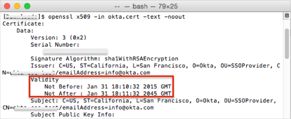
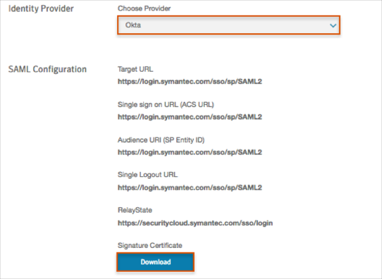

The validity period for SAML certificates for the Symantec Endpoint Protection Cloud application is limited to 10 years. You need to be sure you are using a valid certificate for this application.
To check/update the certificate, follow the instructions below:
Download the following certificate (your current certificate) and save it as okta.cert.
Sign in to the Okta Admin app to generate this variable.
Run the following OpenSSL command in a terminal:
openssl x509 -in okta.cert -text –noout
Where:
okta.cert is your certificate file from the previous step.
Check the validity period, as show in the example below:

If your certificate validity period = 10 years, continue with your application configuration, as described in SAML 2.0 Configuration, below.
If your certificate validity period = 30 years, follow these steps:
Contact Okta Customer Support and request that they enable the key rollover (KEY_ROLLOVER) feature.
Once the feature has been enabled, generate a new application key credential, using the following instructions: http://developer.okta.com/docs/api/resources/apps.html#generate-new-application-key-credential.
You need to generate a certificate with a 2 to 10 years validity period.
Update the key credential for the application using the following instructions: http://developer.okta.com/docs/api/resources/apps.html#update-key-credential-for-application.
Continue with the application configuration, as described in SAML 2.0 Configuration, below.
Log in to Symantec Endpoint Protection Cloud as an administrator.
Navigate to Settings > Identity Provider, then enter the following:
Identity Provider: Select Okta from the Choose Provider drop down menu.
Signature Certificate: Click Download, then save the certificate.

Default Relay State: Enter the following:
https://securitycloud.symantec.com/sso/login
Check the Enable Single Logout box.
Signature Certificate: Click Browse to locate the certificate you saved earlier, then click Upload.
Click Save.

Copy and paste the following metadata into the Import metadata (optional) field, then click Upload.
Sign into the Okta Admin dashboard to generate this value.
Wait for the Sign In URL, Sign Out URL, IdP Entity ID, and Validation Certificate fields to be populated.
Click Save.
Notes:
IDP-initiated flows, SP-initiated flows, and Just In Time (JIT) provisioning are all supported.
Click Sign In:
Enter your Email Address.
Click Sign In: